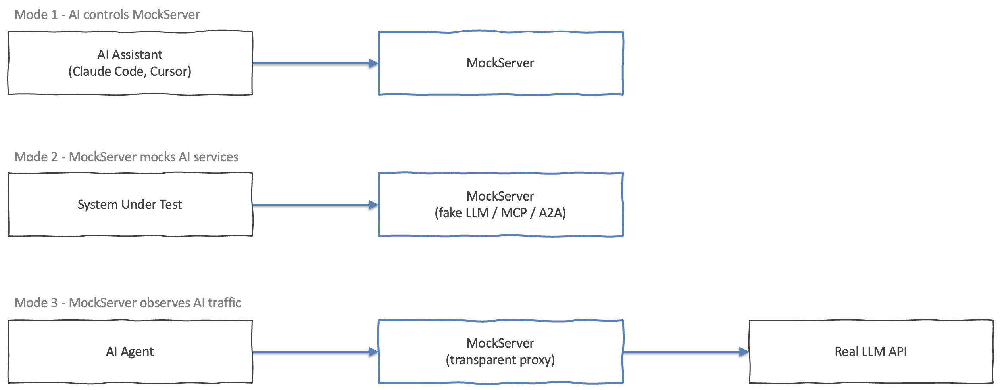

MockServer helps with AI in three distinct ways. Pick the mode that matches your goal:
| I want to… | Use |
|---|---|
| Mode 1 — MockServer controlled by AI (AI coding assistant drives MockServer via MCP) | |
| Connect Claude Code, Cursor, Windsurf, Cline, or OpenCode to MockServer | MCP Setup |
| See all MCP tools my assistant can call (create_expectation, verify_request, etc.) | MCP Tools Reference |
| Ask my assistant to capture traffic and explain why an API call failed | Debugging with AI |
| Have my assistant verify recorded traffic or run contract/resiliency tests | Contract Verification |
| Use MockServer from an AI tool that does not support MCP (ChatGPT Actions, Copilot, etc.) | OpenAPI for AI (REST fallback) |
| Mode 2 — MockServer mocking AI services (return fake LLM or agent-protocol responses) | |
| Mock OpenAI, Anthropic, Gemini, Bedrock, Azure OpenAI, or Ollama responses | LLM Response Mocking |
| Stand up a fake MCP server or A2A agent for my application to connect to | AI Protocol Mocking (MCP & A2A) |
| Mode 3 — MockServer observing / optimising AI traffic (proxy real API calls) | |
| Proxy and record my AI agent's real LLM calls (prompts, tokens, tool calls, streamed responses) | AI Traffic Inspection |
| Analyse captured LLM traffic and get costed advice on reducing inference spend | LLM Cost Optimisation |

The three modes are independent — you can use any combination of them. For example, you might use Mode 3 to capture real LLM traffic during development, Mode 2 to replay it deterministically in CI, and Mode 1 to let your AI assistant create the mock expectations for you.
{% include_subpage _includes/ai_see_also.html %}